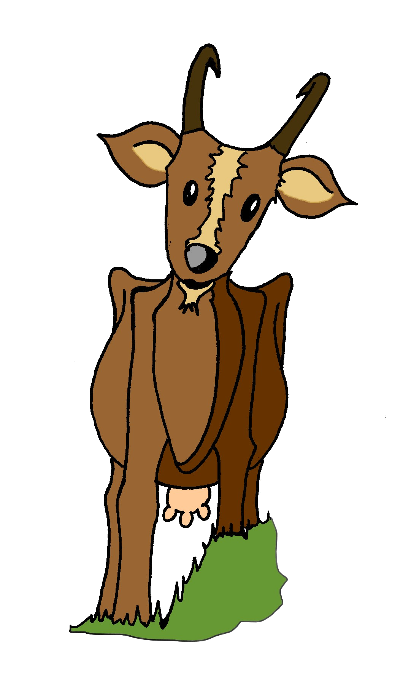
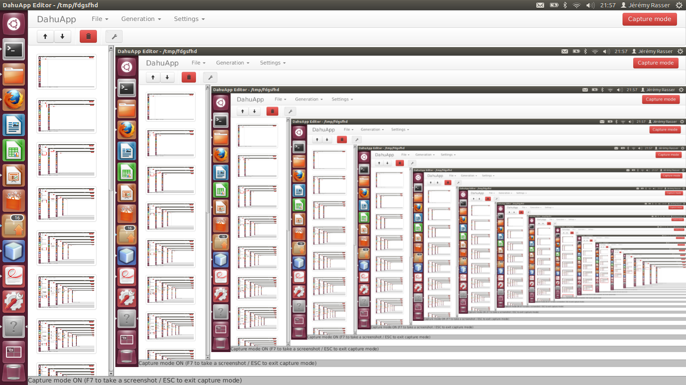
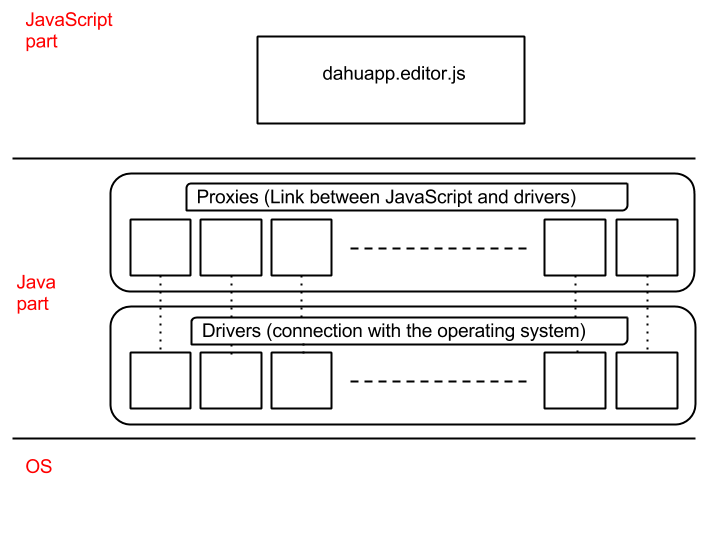
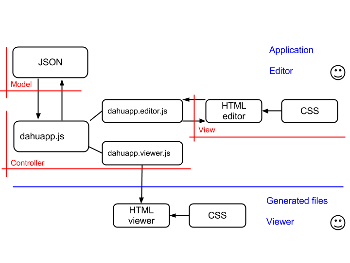
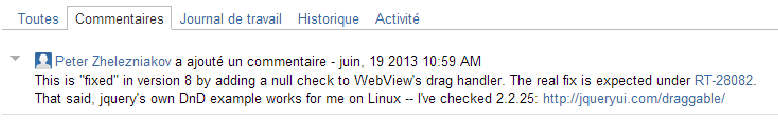

Dahu Project
Thanks to the help of Rémi Barraquand and Matthieu Moy
Denis Becker - Clément Collignon - Mathieu Gaudron
Jérémy Rasser - Jean-Baptiste Viller
June 2013
Plan
Introduction
Overview about the Dahu project
The community of the Dahu
Project assessment
Improvements
Demonstration
Denis Becker - Clément Collignon - Mathieu Gaudron
Jérémy Rasser - Jean-Baptiste Viller
An example with DahuApp

Denis Becker - Clément Collignon - Mathieu Gaudron
Jérémy Rasser - Jean-Baptiste Viller
Introduction

So, what is screencasting ?
Record captures of the screen
Use those captures, modify them (with tooltips) to create a tutorial
Denis Becker - Clément Collignon - Mathieu Gaudron
Jérémy Rasser - Jean-Baptiste Viller
Overview
Edition
The user takes the screenshots and modify them to organize his tutorial
Finally, he generates the project so that it could be viewed
View
The tutorial has been included in a web page and may be viewed by anyone
Denis Becker - Clément Collignon - Mathieu Gaudron
Jérémy Rasser - Jean-Baptiste Viller
Architecture (1)
Interactions between JavaScript and OS

Denis Becker - Clément Collignon - Mathieu Gaudron
Jérémy Rasser - Jean-Baptiste Viller
Architecture (2)
MVC model of our application

Denis Becker - Clément Collignon - Mathieu Gaudron
Jérémy Rasser - Jean-Baptiste Viller
The community
Dahu Community
For a free software, the most important thing is
-
Creating a community
-
Make it known with forums or IRC channel
However before getting a stable architecture of our project, we couldn't invite people to contribute and develop with us the Dahu software
Denis Becker - Clément Collignon - Mathieu Gaudron
Jérémy Rasser - Jean-Baptiste Viller
The community
Java Community
With this software, we have participated in the Java community by finding 3 errors that are
-
The use of a DirectoryChooser in a JavaFX Webview that sometimes rises an exception
-
An error in drag & drop also with a JavaFX Webview that rises an exception
-
A JavaScript callback in a Java method is not called in a particular case
Denis Becker - Clément Collignon - Mathieu Gaudron
Jérémy Rasser - Jean-Baptiste Viller
The community
Java Community (2)
Error in drag & drop : the answer of a contributor

Denis Becker - Clément Collignon - Mathieu Gaudron
Jérémy Rasser - Jean-Baptiste Viller
Project assessment
We have implemented the basic features of a screencast software
- taking screenshots
- organising the taken screenshots (move and remove them)
- generating a presentation using a specified size for the images
- viewing the result, that can be manually modified in the generated JSON
Denis Becker - Clément Collignon - Mathieu Gaudron
Jérémy Rasser - Jean-Baptiste Viller
Project assessment
We have been slowed down by some difficulties
- discovering the languages that were new for us (JavaScript, HTML/CSS, JavaFX library)
- some bugs due to the combination of JavaFX, Ubuntu and the webview
- having a slow internet connexion in a period we had to learn a lot from the internet and in which we needed internet to compile the project (Gradle)
Denis Becker - Clément Collignon - Mathieu Gaudron
Jérémy Rasser - Jean-Baptiste Viller
Improvements
Some improvements we have thought about
- a generic system for adding/removing and editing objects and actions
- a better multi-platform support (e.g. drag & drop)
- a stronger multi-navigator support for the viewer (at the moment, only Firefox and Safari are supported)
- a multi-export format for the images
Denis Becker - Clément Collignon - Mathieu Gaudron
Jérémy Rasser - Jean-Baptiste Viller
The end
Thank you for your attention
Special thanks to
Rémi Barraquand
Matthieu Moy
Denis Becker - Clément Collignon - Mathieu Gaudron
Jérémy Rasser - Jean-Baptiste Viller
←
→
/